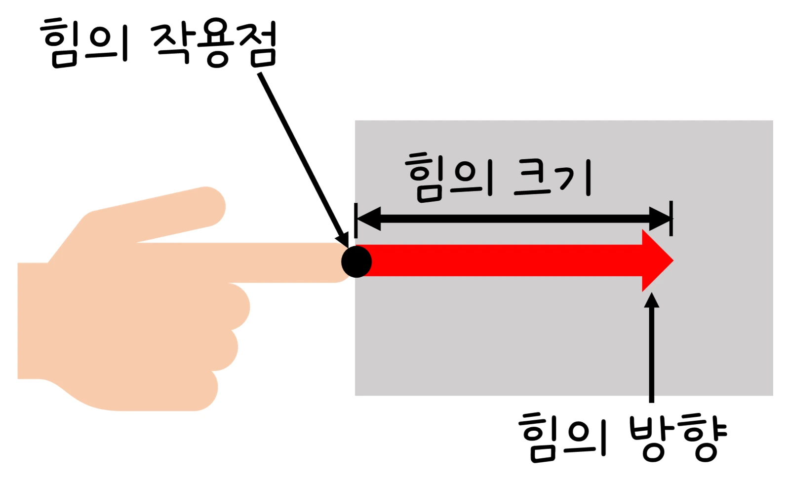
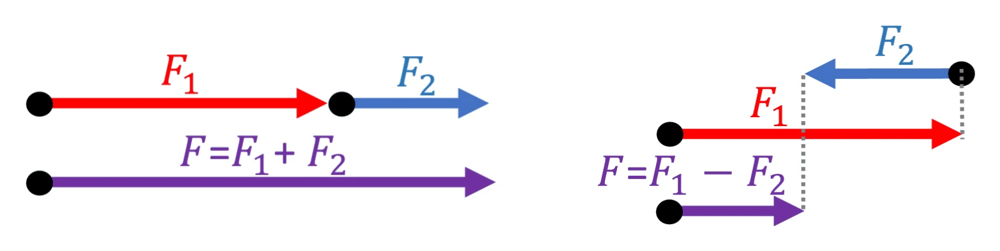

중1 과학 · 힘의 작용 · 웹툰 6화 「힘이란 무엇일까」
실험에서 6 N과 4 N 두 힘이 이루는 각도를 바꿔 가며 합력을 쟀습니다. 같은 방향이면 10 N, 반대면 2 N, 그 사이는 평행사변형의 대각선이었습니다. 힘을 화살표로 나타내는 법과 두 힘을 합치는 법을 정리합니다.
실험 데이터 되짚기
6 N과 4 N 두 힘 사이의 각도를 바꿔 가며 합력을 재면 이렇습니다.
| 각도 | 0° | 60° | 90° | 120° | 180° |
|---|---|---|---|---|---|
| 합력 (N) | 10.0 | 8.7 | 7.2 | 5.3 | 2.0 |
| 설명 | 같은 방향 · 최대 | 피타고라스 | 반대 방향 · 최소 |
각도가 커질수록 합력은 작아집니다. 두 힘을 그냥 더하는 게 아니라 평행사변형의 대각선을 재기 때문입니다. 합력은 6 + 4 = 10 N과 6 − 4 = 2 N 사이에서만 변합니다.
힘은 물체의 모양을 변형시키거나 운동 상태(방향·빠르기)를 변화시키는 원인입니다. 단위는 뉴턴(N). 힘은 크기·방향·작용점을 가진 양(벡터)이라 화살표로 나타냅니다: 화살표의 길이가 크기, 방향이 힘의 방향, 시작점이 작용점입니다.
교재 그림
힘의 세 요소

화살표의 시작점은 힘이 작용하는 곳(작용점), 길이는 힘의 크기, 화살촉은 힘의 방향입니다.
그림으로 보기
힘 화살표 읽는 법 — 시작점·방향·길이
세로줄 한 칸이 1 N입니다. 오른쪽으로 미는 6 N은 6칸 길이의 빨간 화살표로, 위로 드는 2 N은 2칸 길이로 그립니다. 시작점을 옮기면 '어디를 미는지'가 달라집니다.
한 물체에 두 힘이 함께 작용하면 그 효과는 하나의 힘, 곧 합력과 같습니다. 합력은 두 화살표로 만든 평행사변형의 대각선입니다.
일반식: R = √(F₁² + F₂² + 2F₁F₂cosθ). 두 사람이 밧줄로 배를 끌 때 같은 방향으로 당길수록 힘이 세지고 벌어질수록 낭비되며, 다리·크레인의 케이블 각도 계산에 쓰입니다.
교재 그림
같은 방향과 반대 방향의 두 힘

왼쪽: 같은 방향이면 화살표를 이어 붙여 F₁ + F₂(최대). 오른쪽: 반대 방향이면 F₁ − F₂(최소), 합력은 큰 힘 쪽을 향합니다.
움직여 보기
6 N과 4 N, 벌리는 각도에 따라 합력은?
두 힘을 같은 방향(0°)으로 모으면 10 N, 벌릴수록 줄어 90°에서 7.2 N, 반대(180°)면 2 N입니다. 보라 화살표(합력)는 두 화살표로 만든 평행사변형의 대각선입니다. 오른쪽 위 그래프는 각도에 따른 합력입니다.
두 힘이 같은 점에 작용한다고 가정했습니다. 작용점이 다르면 물체가 회전하려는 효과(돌림힘)까지 생깁니다. 실제로 힘을 잴 때는 용수철저울의 눈금 오차와 각도 재기 오차가 있습니다.
F₁ = 6 N, F₂ = 4 N · 최대 F₁ + F₂ (0°) · 최소 |F₁ − F₂| (180°)
“힘은 화살표로 나타낼 수 있어. 화살표의 길이는 힘의 크기, 화살표가 가리키는 쪽은 힘의 방향, 화살표가 시작하는 점은 힘이 작용하는 지점(작용점)을 나타내!”
웹툰 6화 · 노바(초록빛으로 변신). 민재: “축구공을 차면 방향이 바뀌고, 찰흙을 누르면 모양이 변하잖아. 둘 다 ‘힘’ 때문이지?”
“여러 힘이 같은 방향으로 작용하면 힘이 더 세지고, 반대 방향으로 작용하면 힘이 상쇄되기도 해.”
웹툰 6화 · 지유: “힘의 크기는 어떤 단위로 나타내?” 노바: “힘의 단위는 뉴턴(N)을 사용해!”
90°이므로 피타고라스: √(8² + 6²) = √100 = 10 N. 같은 방향이면 14 N, 반대면 2 N이므로 그 사이의 값입니다.
같은 방향: 600 N. 120°: √(300² + 300² + 2 × 300 × 300 × cos120°) = √(90 000 + 90 000 − 90 000) = 300 N — 한 사람이 끄는 것과 같습니다. 벌어질수록 힘이 낭비되는 이유입니다.